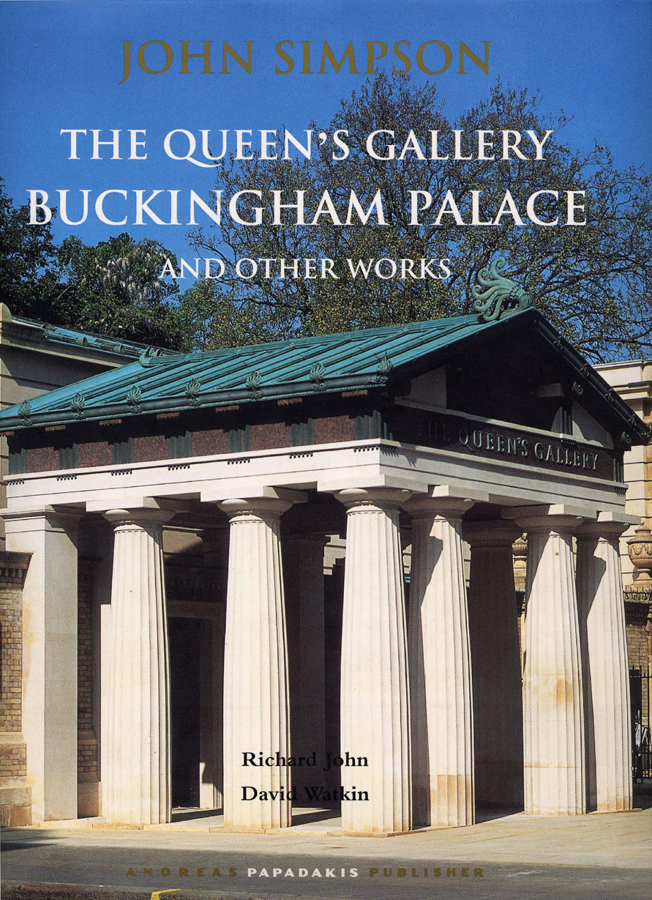

The practice was set up in 1980 as John Simpson & Partners Ltd. Since 2012, the practice has traded as John Simpson Architects. It has worked on a wide variety of projects which include Public, Educational, Commercial and Residential buildings. It has also built up an expertise in dealing with large scale masterplans both within sensitive urban locations and on green field sites.
Its work revolves around the notion that Architecture is a public art where each and every building façade forms the character and shape of the public realm - the streets, the squares and the major civic spaces that we all use. As such it must use a language of building which is recognisable and by necessity, draws on our collective cultural experience - the inherited language of Architecture that each and everyone of us can relate to and understand.
Based in Bloomsbury in the centre of London the practice carries out projects across the world, in Britain, Europe and the USA. Its work ranges from the design of a major new university facility or an urban extension of a town to the design of an individual house or interior of a shop.
In general, the emphasis within the work of the practice is to create an architecture which is timeless: one that uses updated traditional forms to respond to contemporary requirements and modern technology. In this respect, the practice can claim a first for many of its buildings; for instance, the Galleries at Buckingham Palace opened in 2002 by HM Queen Elizabeth II, are the first of their type to incorporate the latest modern conservation technology for works of art within a design that is thoroughly traditional and classical.
At an urban design level, John Simpson Architects have also advocated a fresh new approach where technology is used to serve rather than dominate the design. Since 1990, with the masterplan for Fairford Leys at Aylesbury and later at Dicken's Heath in Solihull near Birmingham, the practice has shown how a sustainable urban alternative to the conventional suburban housing estate can work. Long before this became government policy in England, the practice pioneered the idea of mixed use settlements planned around streets and squares where day to day life is not reliant on the motor car. The practice now advises local authorities and its work features in government guidance on best practice in urban design.
The projects illustrated in this website are a selection from a range of work and are representative of the skill, expertise and knowledge that the practice has at its disposal.
The practice offers the following services:
Architecture
Full Architectural Services
Feasibility studies
Planning Applications
Listed Building consents and works to historic buildings
Lottery/Grant Bid Advice
Building Regulation applications
Homes for individual clients
Conservation & Restoration
Ecological Architecture
Design for Disabled People
Listed Building Advice
Art & Architecture
Church Quinquennial Inspections
Client Design Advisor
Competition Assessor
Construction Techniques
Contract Administration
Film and set design
Urban Design
Full Design Service
Community Planning & Participation
Master Planning
Sustainable and Ecological Design
Urban Planning & Design
Planning Applications
Supplimentary Planning Guidance
Brief Writing
Client Design Advisor
Community Development
Design Codes
Building line drawings
Public Consultation Events
Charette Designs Workshops
Development Plans
Landscape Development
Interiors & Furniture
Interior Design
Shop Fit Consultancy
Furniture Design
Design of Lightfittings
Design for Disabled
Exhibition Design
Product Design
SIMPSON & CO. LTD.
Services are also offered through an associate company in the following areas:
Project Management
CDM Co-ordination Services
Party Wall Surveyors Services
Advice in Relation to Compliance with CDM Regulations
Construction Management
Contract Advice
Supply of John Simpson Furniture
Monograph
John Simpson is one of the leading architects in Europe and America who have returned in recent decades to the classical language of architecture, with all its richness, subtlety, and historic resonances. His public and private works show how this language lends itself with particular ease to the incorporation of the latest developments in technology. Describing a wide range of work from furniture design to town-planning, this beautifully illustrated book gives pride of place to his principal commission so far, the new Queen's Gallery at Buckingham Palace.
This major new centre for the visual arts in London was opened by Her Majesty The Queen in May 2002 as part of the celebrations of her Golden Jubilee. All in a sparklingly inventive and beautifully crafted classical language, the new additions include a Greek Doric entrance portico and entrance hall, with sculptured friezes and free-standing sculpture by Alexander Stoddart. A richly polychromatic staircase hall leads up to three large new galleries, a number of smaller galleries, and a lecture hall. Behind the scenes, Simpson has completely remodelled the Royal Kitchen, staff quarters, and Trades Yard.
John Simpson has also played a key role in the revival of traditional urbanism, as in his design for Paternoster Square next to St Paul's Cathedral, and, most recently in the ambitious Market Hall he has built at the Prince of Wales's new town of Poundbury, Dorset. Other chapters cover his interiors at Gonville and Caius College, Cambridge, a development inspired by the work of Soane and Cockerell, and Ashfold House, Sussex, which also takes Soanean themes in new directions.
The authors are both well known architectural historians. Dr Richard John was a Fellow of Merton College, Oxford and is now at the Faculty of the School of Architecture in Miami. Professor David Watkin is a Fellow of Peterhouse and Professor of the History of Architecture at the University of Cambridge. He is also a leading authority on the work of C.R. Cockerell and Sir John Soane, architects who profoundly influenced John Simpson. Interestingly, both John Simpson and David Watkin taught at the Prince of Wales's Institute of Architecture when Richard John was its Director.
The book is a unique and compelling demonstration of the fruitful interchange of history and practice in modern architecture.
Catesby Leigh: "The Prince's Architect - John Simpson; The Queen's Gallery, Buckingham Palace and other works" Book Review, National Review, 11 November 2002.
Authors Dr Richard John
Dr Richard John was educated at Cambridge, where he took a starred First in History of Art, at Columbia University, and at the Warburg Institute in London. He taught at the Architectural Association School of Architecture for three years before being elected a Fellow of Merton College, Oxford, where he taught Medieval and Renaissance History from 1991-94. He worked for HRH The Prince of Wales from 1995-98, first as Director of the Prince's Institute of Architecture in London, and then as founding Director of the Prince's Summer School in Architecture in the United States. In 1999 he joined the Faculty of the School of Architecture at the University of Miami. His publications include The Vitruvian Path (Oxford 1994), Julian Bicknell and Associates: Buildings and Projects (London 1996), Alec Cobbe: Thirty Years of Design and Painting (London 1996), and Thomas Gordon Smith: The Rebirth of Classical Architecture (London: Papadakis Publisher, 2001).
Professor David Watkin
Professor David Watkin is a Fellow of Peterhouse, Cambridge, Professor of the History of Architecture at the University of Cambridge, and Honorary Fellow of the Royal Institute of British Architects. He is Vice-Chairman of the Georgian Group, and was a member of the Historic Buildings Council and its successor bodies in English Heritage from 1980-1995. His publications include The Life and Work of C.R. Cockerell, RA (London 1974), awarded the Alice Davis Hitchcock Medallion by the Society of Architectural Historians of Great Britain; English Architecture: A Concise History (London 1979; rev. ed. 1991); A History of Western Architecture (London 1986; 3rd rev. ed. 2001); Sir John Soane: Enlightenment Thought and the Royal Academy Lectures (Cambridge 1996), winner of the Sir Banister Fletcher Award; and Morality and Architecture Revisited (London 2001).
Publications
Amery, Colin, “In the shadow of St Paul’s”, (Paternoster Square), Financial Times (London), 13 June, 1988, pp. 21.
Architectural Design, Profile No. 103, Architecture in Arcadia, “Coldharbour Farm Development” (Fairford Leys), Academy Editions (London), 1993, pp. 70-73.
Architectural Design, Profile No. 97,“Paternoster Square and the New Classical Tradition”, Academy Editions (London), 1992.
Architectural Design, Vol. 58, “Paternoster Square Redevelopment Project”, Academy Editions, 1988, pp.VII -XII.
Architectural Design, Profile Interventions in Historic Centres, “The reconstruction of the area around St Paul’s Cathedral in the City of London”, Academy Editions (London), pp. 76-85.
Aslet, Clive, “Re-thinking the Village”, (Fairford Leys), Country Life (London), 25 August, 1988, pp. 102-103.
Aslet, Clive, “Ashfold House, West Sussex”, Country Life (London), 7 November, 1991, pp. 42-5.
Aslet, Clive, “The Last Country Houses” (Ashfold House), Yale University Press (USA), 1982, ISBN 0300034741
BBC News, "Stanford Hall could become military rehabilitation centre", 13 June 2013.
Binney, Marcus, “Hooked on Classics”, (Ashfold House), The Times Magazine (London), 28 January, 1995, pp. 22-26.
Binney, Marcus, “ Queens New Gallery Designed Temple for her Treasures” (Buckingham Palace), The Times, (London), 17 May, 2002, pp. 3.
Binney, Marcus, “Temple of Learning will dine in classical style”, (Gonville and Caius College, Cambridge), The Times (London), 27 December, 1996, pp. 6.
Binney, Marcus, "Stately home may become centre for injured soldiers", The Times, 22 December, 2012, pp. 84.
Black, Brinsley, “St Pauls: Classicism versus the rest”, House and Garden (London)”, October, 1988, pp. 194-194.
Bridges, John, “Four-square Classicism” (Ashfold House), House and Garden (London), January, 1987, pp. 56-57.
Brooke, Christopher; Richmond, Hugh; and, Watkin, David, “The Master’s Lodge, Gonville and Caius College, Cambridge”, The Caian (Cambridge), November 1999, pp. 110-25
Bussel, Abbey, “London Bridge City: Venice on the Thames”, Progressive Architecture (New York), June, 1990, pp. 23-24.
Casey, John, Dr., “Classics at Cambridge”, (Gonville and Caius College), The Daily Telegraph, 12 March 1998, pp. 22.
Country Life, "Kensington Palace transformed", 03 October 2012, pp. 76-79.
Cruickshank, Dan, “Classicism and Commerce”, (Paternoster Square), Architects Journal (London), 15 November, 1989, pp. 28-31.
Doordan, Dennis, Twentieth Century Architecture, “The Paternoster Square Debate”, Laurence King (London), 2001, pp. 249-250.
Dorment, Richard, “Jewels in the Crown” (The Queen’s Gallery, Buckingham Palace), The Daily Telegraph, (London), 22 May, 2002 pp.19
Deitz, Paula, “The Queen’s Architect comes to Town”, (Carhart Mansion, New York), The New York Times, (USA) 14 August, 2005, pp.2
Dowling, Elizabeth, “Timeless Architecture”, Rizzoli (New York), 2004, pp.108-121 ISBN 0764318950
Economakis, Richard, Building Classical, Ernst & Sohn (London), 1993, pp. 86-93, 138, 170-171
Gayford, Martin, “Jewels in the Crown” (The Queen’s Gallery, Buckingham Palace), The Spectator, London, 1 June 2002, pp.44
Glancey, Jonathan, “ An Aardvark at Buckingham Palace”, The Guardian, (London), 20 May, 2002
Glancey, Jonathan, “Genteel and Frightfully Windsor: George IV would hate it”, The Guardian, (London), 15 January, 1999
Glancey, Jonathan, “High & Mighty” (The Queen’s Gallery, Buckingham Palace), The Guardian, (London), 16 December, 2002
Gray, Christopher, “Streetscapes/7 East 95th Street; at 1916 Fabric House, Artisanship of Bygone Era” (Carhart Mansion, New York) New York Times (USA), 25 April, 2004.
Havergal, Chris, "1960s extension faces bulldozer in University Arms revamp", (University Arms Hotel), Cambridge News,13th June 2013.
Hookham, Mark, "Downton Rehab - duke's stately home for war heroes", The Sunday Times, 23 December 2012.
Howard, Henrietta, “Modern Classic”, (Ashfold House), House and Garden (London), September 1993, pp. 69-74.
Jencks, Charles, “The Prince Versus the Architects”, The Observer (London), 12 June, 1988, pp. 33-34.
Jenkins, Simon, “A Second Chance to Choose Cinderella” (Paternoster Square), The Sunday Times (London), 26 June, 1988, pp. B1.
John, Richard and Watkin, David, “John Simpson, The Queen’s Gallery, Buckingham Palace and other works” Andreas Papadakis Publisher (London) 2002 ISBN 1901092380 and 1901092399
Kahn, Eve M., “Poetry and Association”, Traditional Building, (USA) February 2005.
Kennedy, Maer, “Nymphs Charms in full view” (The Queen’s Gallery, Buckingham Palace), The Guardian (London), 18 May, 2002
Kennedy, Maer, “Queens Gallery and Theatre share Architectural Prize”, The Guardian, (London), 12 June, 2003
Knevitt, Charles, “The Classical Revivalists stand up to be counted”, (Classical Survival, Classical Revival), The Times (London), 29 August, 1984, pp. 10.
Krier, Leon, “God Save the Prince”, (Paternoster Square), Modern Painters (London), Vol. 1 No. 2, Summer 1988, pp. 23-25.
Leigh, Catesby, “The Princes Architect – John Simpson; The Queen’s Gallery, Buckingham Palace and other works” Book Review, National Review, 11 November, 2002.
Lyall, Sutherland, “Forging Ahead Backwards”, (Real Architecture), Building (London), 3 April, 1987, pp.
Magnet, Myron, “Reimagining the Far West Side, Renowned architects bring the New York skyscraper tradition into the 21st Century”, (Design for Far West Side N.Y.) City Journal, (New York) Autumn 2004
Magnet, Myron, "Can We Still Build Real Architecture?", City Journal, Spring 2013, pp. 102-111.
Musson, Jeremy, “Architects tell us your dreams”, (House by Seaside) Country Life, (London) 29 September, 2005, pp.98-99
Paternoster Square, “The Master Plan”, Paternoster Associates (London), 1998, pp23-25.
Papadakis, Andreas, and Watson, Harriet, “New Classicism” Academy Editions (London) 1990 ISBN 1854900307(PB)
Powell, Kenneth, “New London Architecture” (The Queen’s Gallery, Buckingham Palace) Merrell Publishers (London) 2005 ISBN 185894318
Powell, Kenneth, “Enduring Charm of Classicism”, The Daily Telegraph (London), 19 March, 1987, pp. 15.
Powell, Kenneth, “A Paternoster for the Prince”, Country Life (London), 17 December, 1987, pp. 52-53.
Powell, Kenneth, “The Saga of Paternoster Square”, The Daily Telegraph (London), June 1988, pp. 20.
Powell, Kenneth, “A New Venice on the Thames” (London Bridge City), The Daily Telegraph (London), 7 January, 1989, pp. XV.
Powell, Kenneth, “The Minister Must Decide”, (London Bridge City), Country Life (London), 2 March, 1989, pp. 111.
Powell, Kenneth, “The Shape of Country Houses to Come”, (Ashfold House) The Daily Telegraph (London), 9 November, 1991, pp. Weekend XVII.
Powell, Kenneth, “Classicism’s Finest Hour”, The Daily Telegraph (London), 22 October, 1992, pp. 15.
Powell, Kenneth, “Some Fizz for Bucks”, (Fairford Leys), The Daily Telegraph (London), 9 November, 1994, pp. 38.
Parametro, Vol. 236, “John Simpson and Partners Limited, Londra”, Gruppo Editoriale Faenza Editrice SPA (Italy), Nov.-Dec. 2001, pp. 128-139.
Richmond, Hugh; Brooke, Christopher; and, Watkin, David, “The Master’s Lodge, Gonville and Caius College, Cambridge”, The Caian (Cambridge), November 1999, pp. 110-25
Royal Academy of Arts, “Contemporary British Architects”, Prestel – Verlag (New York), 1994, pp. 148-149.
Silver, Natlan, “Faberge Egg and Sliced Egg”, Metropolis (USA), November 2002
Simpson, John, “Canaletto”, Modern Painters (London), Vol. 2 No. 40, Winter 1989/90, pp.76-77.
Simpson, John, “The West Range of Gonville Court, Past and Future”, The Caian, November 1996, pp. 110-25.
Stamp, Gavin, “Public Airing for Paternoster Square Proposals”, The Independent (London), 14 June, 1988, pp. 5.
Stamp, Gavin, “The Curse of Palladio” (The Queen’s Gallery, Buckingham Palace) Apollo (London), November 2004
Stamp, Gavin, “Variety and Continuity” (The Queen’s Gallery, Buckingham Palace) The Spectator (London), June 2002
Steiner, Wendy, “Venice on Thames” (London Bridge City), Independent on Sunday (London), 4 February, 1990, pp.31.
Stevens-Curl, James, “Oxford Directory of Architecture” (John Simpson), Oxford University Press (Oxford), 1999, pp. 614, ISBN 0192100068
Watkin, David, “Paternoster Square”, City Journal, vol. 6, no. 1, (New York), Winter 1996, pp.14-27.
Watkin, David, “Rooms that Speak of Memory”, (Gonville and Caius College, Cambridge), Country Life (London), 2 April, 1998, pp. 48-53.
Watkin, David, “The Master’s Lodge”, (Gonville and Caius College, Cambridge), Country Life, 24 September, 1998, pp. 22-27.
Watkin, David, “Soane and Simpson”, The Caian, November 1998, pp. 55-64.
Watkin, David, Richmond, Hugh; and, Brooke, Christopher, “The Master’s Lodge, Gonville and Caius College, Cambridge”, The Caian (Cambridge), November 1999, pp. 110-25
Watkin, David, “The Queen’s Gallery, Buckingham Palace”, Country Life (London), 28 January, 1999, pp. 48-51.
Watkin, David, “Painter’s Yard, Chelsea”, Country Life (London), 16 September, 1999, pp.120-24.
Watkin, David, “The New Queen’s Gallery”, in Royal Treasures: A Golden Jubilee Celebration, The Royal Collection, (London) 2002, pp. 61-4.
Watkin, David and John, Richard, “John Simpson, The Queen’s Gallery, Buckingham Palace and other works” Andreas Papadakis Publisher (London) 2002 ISBN 1901092380 and 1901092399
Watkin, David, “Morality & Architecture Revisited” John Murray (London) ISBN 6719564042, p.144, 152
Watkin, David, “The Queen’s Gallery, Buckingham Palace” Architecture Today (London) July 2002, pp.20
Watkin, David, “History of Western Architecture” Laurence King Publishing (London) ISBN 185669223X
Watson, Harriet, and Papadakis, Andreas “New Classicism” Academy Editions (London) 1990 ISBN 1854900307(PB)
White, Roger, “Classical Manipulation”, (50 Belsize Park), House and Garden, (London) pp.94-99.
White, Roger, “Top Ten”, House and Garden, (London) June 2003, pp.105.
Worsely, Giles, “ A Very Grand Re-Entrance”, (The Queen’s Gallery, Buckingham Palace) The Daily Telegraph, (London), 22 May, 2002, pp. 19
RECENT ARTICLES IN FULL AVAILABLE ON WEBSITE:
Binney, Marcus, "Queen's new gallery designed as temple for her treasures", The Times (London), 17 May, 2002, pp. 3
Dorment, Richard, "Jewels in the Crown", The Daily Telegraph (London), 22 May, 2002, pp. 19
Glancey, Jonathan, "An aardvark at Buckingham Palace", The Guardian G2 (London), 22 May, 2002, pp.13-14
Watkin, David, "The Queen's Gallery, Buckingham Palace", Country Life (London), 23 May, 2002, pp. 108-115
Worsley, Giles, "A very grand re-entrance", The Daily Telegraph (London), 22 May, 2002, pp. 19
Stamp, Gavin, “Variety and Continuity”, The Spectator (London), 1 June, 2002
Deitz, Paula, “The Queen’s Architect Comes to Town”, New York Times (New York), 14 August, 2005, pp.2
Kahn, Eve M. “Poetry and Association”, Traditional Building (USA), February, 2005
Dorment, Richard, "Victoria & Albert's Art From The Heart" , The Daily Telegraph (London), 23rd March 2010 pp. 25